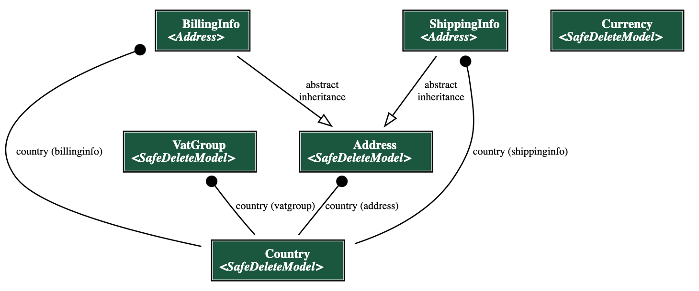
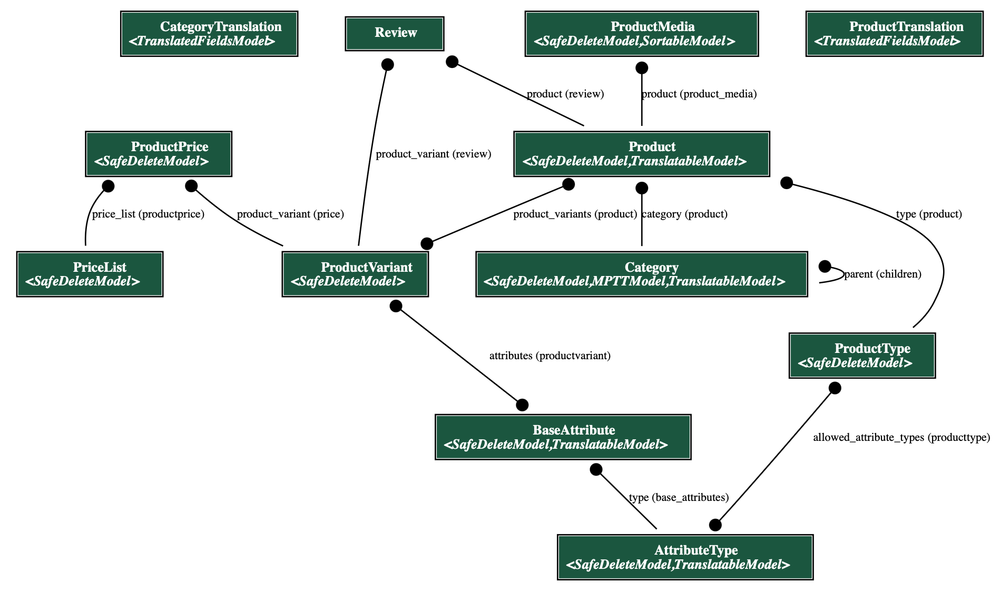
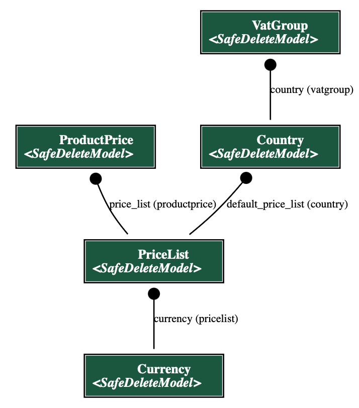
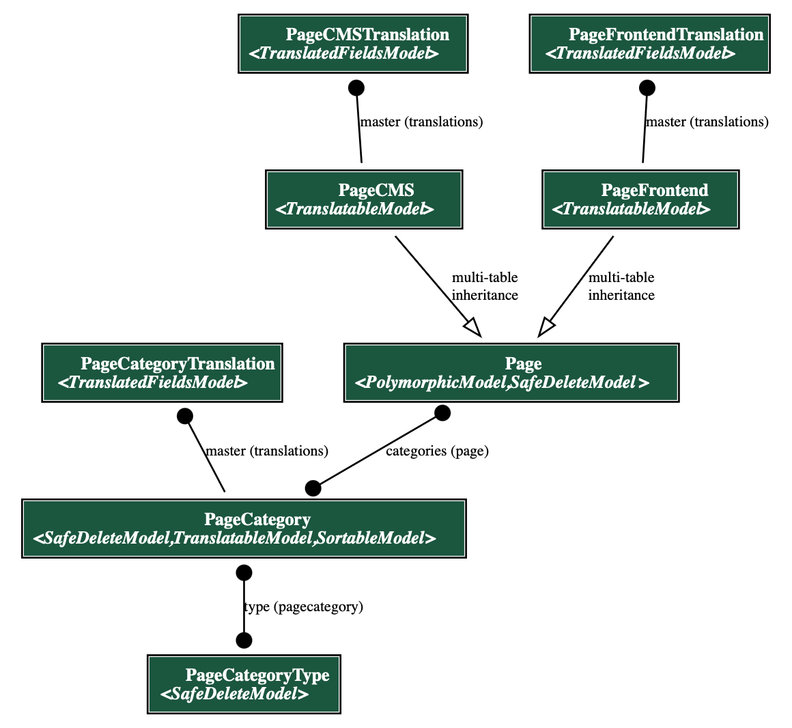
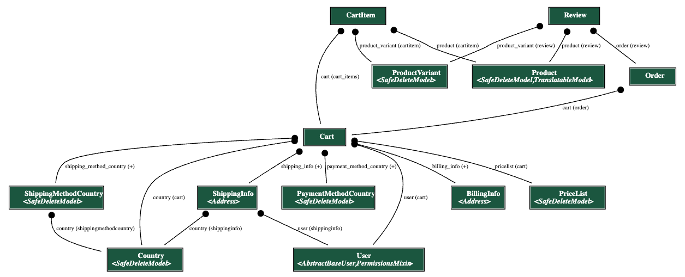
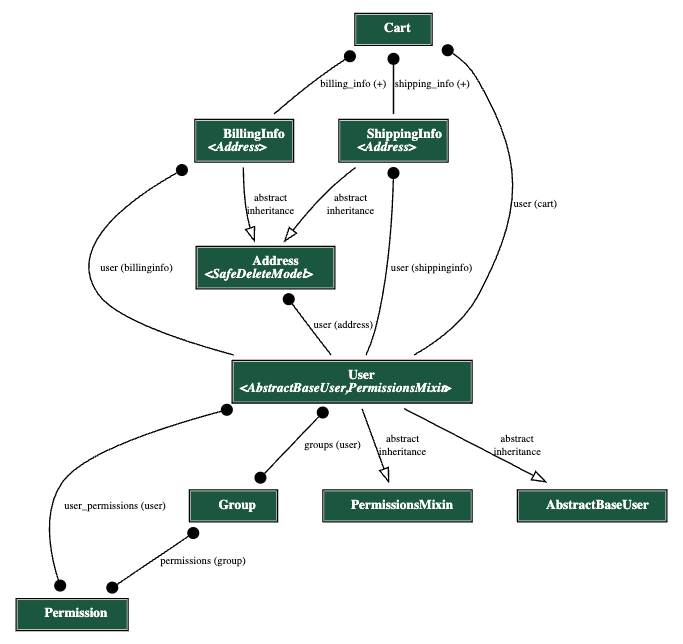

Table of contents:
Data models
In this section we will describe data models of the backend part of the application. To do so, we will go over various parts of system and describe them in more detail using diagrams.
To create diagrams, we used django-extensions app and its Graph models part, which generates a Graphviz .dot file from our django models. From that .dot file we used GraphvizOnline site to generate images of the diagrams.
Country

Above is the diagram of models with country specific data. The model is defined in backend/core/country/models.py file.
The main “building” block is a Country model which holds all the data related to countries - like name, code, language, pricelist and vat groups.
VatGroup itself defines binding between country and VAT percentage.
Currency looks like a separate model with no relations, but it’s mainly related to the PriceList model which will be described in a later sections.
Address model is used to store addresses of users and is used during checkout process or are directly bindined to Cart model as well as User model.
ShippingInfo and BillingInfo models are used to store user’s shipping and billing information during checkout process. They inherit from Address model and add some additional fields.
Product

Above is the diagram of models related to products and categories. The models are defined in backend/core/product/models.py file and are divided into 2 groups:
- Product models - models that are directly related to products. They are:
Product- main product model.ProductMedia- model for product media. It has a FK toProductmodel.ProductType- model for product types. It defines the type of product (e.g. t-shirts, coffee, etc.). It defines allowedAttributeTypes for product variants of this type and vat group for each country of this product.Category- model for product categories. It’s a tree structure, so it has aparentfield which is a FK to itself.
- Product Variant models - models that are related to product variants. They are:
ProductVariant- main product variant model. It has a FK toProductmodel.AttributeType- model for product variant attributes. It defines the type of attribute (e.g. color, size, etc.).BaseAttribute- model for product variant attribute values. It defines the value of attribute (e.g. red, blue, etc.). It has a FK toAttributeTypemodel.
Logic behind product variants is that each product variant has a set of attributes, which are defined by AttributeType model. Each attribute has a value, which is defined by BaseAttribute model. For example, if we have a product variant of type t-shirt, it will have 2 attributes: color and size. Each attribute will have a value, e.g. color will have values red, blue, green, etc. and size will have values S, M, L, etc.
Pricelist/Currency

Above is the diagram of models related to price lists and currencies. The models are defined in backend/core/product/models.py and backend/core/country/models.py files.
Every price (ProductPrice) represents a price of ProductVariant in a PriceList. Where PriceList usually represents a specific group of prices - it might be a group of prices for a specific country or a group of prices for a specific customers (like B2B or B2C). PriceList is also related to Currency model, which defines the currency of the prices in the price list.
The interesting part of ecoseller pricing logic comes as VatGroup model which allows you to define different VAT groups for different countries. This allows you to have different VAT value (incl. different group of VAT - reduced, standard, …) for different countries.
With this logic, you can define a price list for a specific country and define different VAT groups for different countries. This allows you to have different prices for different countries, which is a common practice in e-commerce (for example due to different expenses for marketing, stocking, etc.).
CMS

Above is the diagram of the CMS models with its main relations. Models are defined in backend/core/cms/models.py file. It allows to create content pages with different types of content. The main model is PageCMS model, which represents a page with content in a specific language. It contains a content field in editorjs language. PageFrontend is an unussual idea in ecommerce platform. Since can have some specific pages that might not be stored in the database but would be represented as a HTML/JSX page, PageFrontend is simply a link to that page - or, to be clear, path of that page in the frontend. Why do we need that? Imagine a situation where you simply want some extra CSS styles or some specific layout of the (landing) page. It’s made directly in the frontend app and you simply store link in the database.
This is perfectly usefull if you consider other model PageCategory which basically puts a page in a category. This allows you to create a group of different PageCMS and PageFrontned. For example, you can create a category Info pages and put all your info pages in it.
We can go a bit further and create PageCategoryType, which can group these categories. For example, you can create a PageCategoryType Footer and put all your categoreis that should display in footer. You can then fetch those footer specific categories and display them in the footer of your website. This is a very flexible way of creating content pages and displaying them in the frontend.
Cart

Above is the diagram of the Cart model with its main relations to other models. The model is defined in backend/core/cart/models.py file.
The Cart model is used to store user’s cart. It has a FK to User model, which binds the cart to the user. It also has a FK to ShippingMethodCountry and PaymentMethodCountry models, which are used to store user’s selected shipping and payment methods.
We also have a CartItem model, which represents concrete item in the cart and has a FK relation to Cart. Each CartItem also has a FK to ProductVariant and Product models, to bind the item with the concrete product.
The Cart model also has relations to country specific models such as Country, PriceList, PaymentMethodCountry and ShippingMethodCountry to ensure that the cart is bind to the concrete country specific data.
Once the user creates an order, new relation is created - a FK from Order model to Cart. We can see one more model in the diagram - Review. It’s used to store user’s reviews of products. It has a FK to ProductVariant, Product and Order models.
User

Above is the diagram of the User model with its main relations to other models. The model is defined in backend/core/user/models.py file.
In ecoseller, we replaced default django User model with our own User model in order to have more control over it. You can see that it has 2 abstract models as its parents: AbstractBaseUser and PermissionsMixin:
AbstractBaseUseris a django abstract model that provides basic user functionalityPermissionsMixinis a django abstract model that provides permissions functionality.
Another authorozation related models are Group and Permission models. They are django models that are used for authorization purposes. Group model is used to group users into units, while Permission model is used to define permissions for users. More on how we handle user authorization can be found in Authorization section.
Next important relation is to Address model. It is used to store user’s address. As we can see, there is also a connection to ShippingInfo and BillingInfo, which are used during checkout process, to store user’s shipping and billing information. The last relation is to Cart model, which binds user to his cart.
Authorization
As mentioned in Authorization section, ecoseller uses roles and permissions to restrict access to certain parts of the application.
To have better control over permissions representation and their grouping, we created 2 new models:
ManagerPermission- for permission representation. It consists of:name- name of permission with predefined format: <model_name>_<permission_type>_permission.model- name of model to which this permission correspondsdescription- text description of permissiontype- type of permission. Enum of 4 possible values:viewaddchangedelete
ManagerGroup- for group representation. It consists of:name- name of groupdescription- text description of grouppermissions- M2M field to permissions of which this group consists.
Each group/permission should be convertable to DRF group/permission.
RolesManager
RolesManager is our internal python class for handling permissions and (almost) everything related to them. It consists purely of static methods, so we can call them anywhere across the code.
Its main usage is:
- Loading initial predefined roles from config and creating
ManagerGroupandManagerPermissionobjects from it - Conversion between
DRF GroupandManagerGroup, and also betweenDRF PermissionandManagerPermission
Initial roles definitions and their loading
As mentioned earlier, we have roles.json config file which has initial roles definition and RolesManager class which is responsible for loading it. We achieved this behaviour by following adjustments:
- We created
initial_data.pyfile along withpopulate_groupsmethod in it. In this method, we :- load
roles.jsonconfig withRolesManagerclass and create instances ofManagerGroupandManagerPermission - Create DRF Groups from loaded
ManagerGroupobjects - Create general DRF permissions from
app_config - Convert all DRF permissions to
ManagerPermissionobjects - Assign
ManagerPermissionobjects to correspondingManagerGroupobjects
- load
- We put
populate_groupsmethod in ourusermigration file0002_auto_20230316_1534.pyto theoperationspart - this will ensure that when this migration runs, it will also triggerpopulate_groupsmethod
Protecting views with permissions
In order to apply our permission restrictions, we defined two custom decorators are defined: @check_user_access_decorator and @check_user_is_staff_decorator (their definition can be found in backend/core/roles/decorator.py).
@check_user_access_decorator
The decorator is used mainly for POST, PUT and DELETE views.
It checks if the user has the permission to perform the action. If the user has the permission, the view is executed. Otherwise, the view returns 403 status code.
Parameters
permissions: Set of permissions that the user needs to have to access view
Usage example
To check whether the user has product_change_permission permission for accessing put method, put decorator above the method:
@check_user_access_decorator({"product_change_permission"})
def put(self, request, id):
return super().put(request, id)
@check_user_is_staff_decorator
The decorator is used mainly for GET views. It checks if the user is staff (is_staff field in User model). If the user is staff, the view is executed. Otherwise, the view returns 403 status code.
Parameters
- None: The decorator does not take any parameters
Usage example
To check whether the user is staff for accessing get method, put decorator above the method:
@check_user_is_staff_decorator()
def get(self, request, id):
return super().get(request, id)